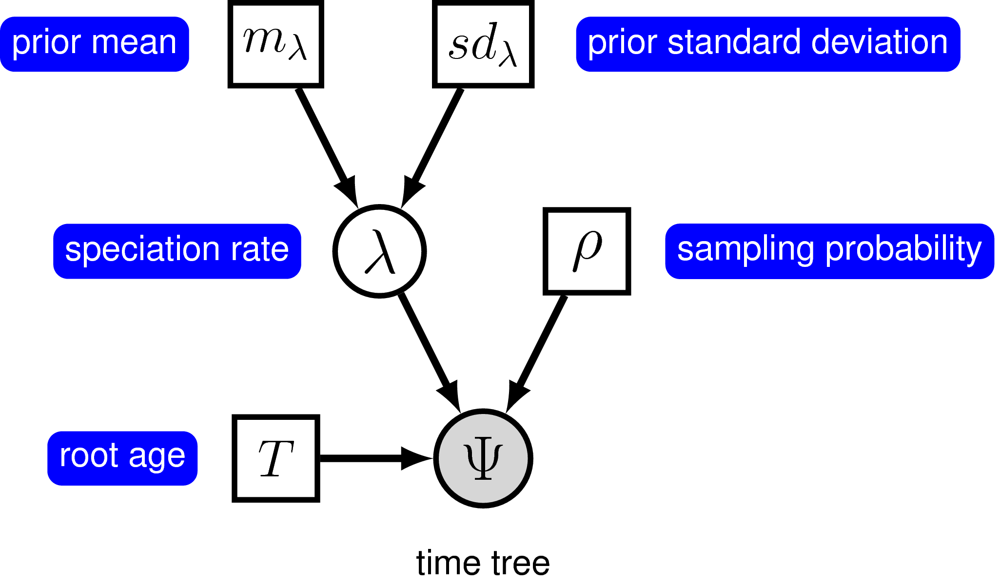
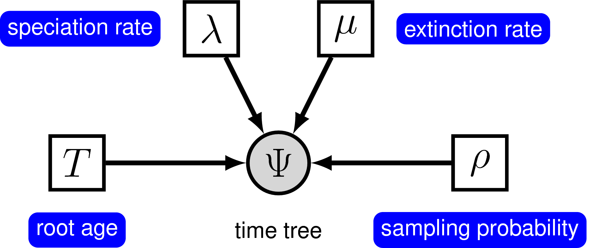

Required Software
For our tutorials we recommend that you download and install the latest release of ‘RevBayes‘ (Höhna et al. 2016), which is available for Mac OS X, Windows, and Linux operating systems. Directions for downloading and installing the software are available on the program webpage: [http://revbayes.com](http://revbayes.com/). The exercises provided often also require additional programs for editing text files and visualizing output. The following are very useful tools for working with ‘RevBayes‘:- Some of the output can be automatically visualized using pre-made R functions provided by our R-package RevGadgets. You should make sure that you have a recent release of R and RevGadgets installed.
- A good text editor – if you do not already have one that you like, we recommend one that has features for syntax coloring, easy navigation between different files, line numbers, etc. Good options include Sublime Text, Atom or NotePad++, which are available for Mac OSX, Windows, and Linux.
- Tracer – for visualizing and assessing numerical parameter samples from ‘RevBayes‘
- IcyTree – a web-hosted phylogenetic tree visualization tool that is supported for Firefox or Google Chrome browsers
- FigTree – a tree visualization program
Overview: Diversification Rate Estimation
Models of speciation and extinction are fundamental to any phylogenetic analysis of macroevolutionary processes (e.g.,divergence time estimation, diversification rate estimation, continuous and discrete trait evolution, and historical biogeography). First, a prior model describing the distribution of speciation events over time is critical to estimating phylogenies with branch lengths proportional to time. Second, stochastic branching models allow for inference of speciation and extinction rates. These inferences allow us to investigate key questions in evolutionary biology.
Diversification-rate parameters may be included as nuisance parameters
of other phylogenetic models—i.e., where
these diversification-rate parameters are not of direct interest. For
example, many methods for estimating species divergence times—such as
BEAST (Drummond et al. 2012),
MrBayes (Ronquist et al. 2012), and
RevBayes (Höhna et al. 2016)—implement ‘relaxed-clock models’
that include a constant-rate birth-death branching process as a prior
model on the distribution of tree topologies and node ages. Although the
parameters of these ‘tree priors’ are not typically of direct interest,
they are nevertheless estimated as part of the joint posterior
probability distribution of the relaxed-clock model, and so can be
estimated simply by querying the corresponding marginal posterior
probability densities. In fact, this may provide more robust estimates
of the diversification-rate parameters, as they accommodate uncertainty
in the other phylogenetic-model parameters (including the tree topology,
divergence-time estimates, and the other relaxed-clock model
parameters). More recent work,
e.g., Heath et al. (2014), uses macroevolutionary
models (the fossilized birth-death process) to calibrate phylogenies and
thus to infer dated trees.
In these tutorials we focus on the different types of macroevolutionary models to study diversification processes and thus the diversification-rate parameters themselves. Nevertheless, these macroevolutionary models should be used for other evolutionary questions, when an appropriate prior distribution on the tree and divergence times is needed.
Types of Hypotheses for Estimating Diversification Rates
Many evolutionary phenomena entail differential rates of diversification (speciation – extinction); e.g., adaptive radiation, diversity-dependent diversification, key innovations, and mass extinction. The specific study questions regarding lineage diversification may be classified within three fundamental categories of inference problems. Admittedly, this classification scheme is somewhat arbitrary, but it is nevertheless useful, as it allows users to navigate the ever-increasing number of available phylogenetic methods. Below, we describe each of the fundamental questions regarding diversification rates.
(1) Diversification-rate through time estimation
What is the (constant) rate of diversification in my study group? The most basic models estimate parameters of the stochastic-branching process (i.e., rates of speciation and extinction, or composite parameters such as net-diversification and relative-extinction rates) under the assumption that rates have remained constant across lineages and through time; i.e., under a constant-rate birth-death stochastic-branching process model (Nee et al. 1994). Extensions to the (basic) constant-rate models include diversification-rate variation through time (Stadler 2011; Höhna 2015). First, we might ask whether there is evidence of an episodic, tree-wide increase in diversification rates (associated with a sudden increase in speciation rate and/or decrease in extinction rate), as might occur during an episode of adaptive radiation. A second question asks whether there is evidence of a continuous/gradual decrease in diversification rates through time (associated with decreasing speciation rates and/or increasing extinction rates), as might occur because of diversity-dependent diversification (i.e., where competitive ecological interactions among the species of a growing tree decrease the opportunities for speciation and/or increase the probability of extinction, e.g., Höhna (2014)). Third, we can ask whether changes in diversification rates are correlated with environmental factors, such as environmental CO2 or temperature (Condamine et al. 2013). A final question in this category asks whether our study tree was impacted by a mass-extinction event (where a large fraction of the standing species diversity is suddenly lost, e.g., May et al. (2016)). The common theme of these studies is that the diversification process is tree-wide, that is, all lineages of the study group have the exact same rates at a given time.
(2) Diversification-rate variation across branches estimation
Is there evidence that diversification rates have varied significantly across the branches of my study group? Models have been developed to detect departures from rate constancy across lineages; these tests are analogous to methods that test for departures from a molecular clock—i.e., to assess whether substitution rates vary significantly across lineages (Alfaro et al. 2009; Rabosky 2014). These models are important for assessing whether a given tree violates the assumptions of rate homogeneity among lineages. Furthermore, these models are important to answer questions such as: What are the branch-specific diversification rates?; and Have there been significant diversification-rate shifts along branches in my study group, and if so, how many shifts, what magnitude of rate-shifts and along which branches?
(3) Character-dependent diversification-rate estimation
Are diversification rates correlated with some variable in my study group? Character-dependent diversification-rate models aim to identify overall correlations between diversification rates and organismal features (binary and multi-state discrete morphological traits, continuous morphological traits, geographic range, etc.). For example, one can hypothesize that a binary character, say if an organism is herbivorous/carnivorous or self-compatible/self-incompatible, impact the diversification rates. Then, if the organism is in state 0 (e.g., is herbivorous) it has a lower (or higher) diversification rate than if the organism is in state 1 (e.g., carnivorous) (Maddison et al. 2007).
Diversification Rate Models
We begin this section with a general introduction to the stochastic birth-death branching process that underlies inference of diversification rates in RevBayes. This primer will provide some details on the relevant theory of stochastic-branching process models. We appreciate that some readers may want to skip this somewhat technical primer; however, we believe that a better understanding of the relevant theory provides a foundation for performing better inferences. We then discuss a variety of specific birth-death models, but emphasize that these examples represent only a tiny fraction of the possible diversification-rate models that can be specified in RevBayes.
The birth-death branching process
Our approach is based on the reconstructed evolutionary process described by Nee et al. (1994); a birth-death process in which only sampled, extant lineages are observed. Let $N(t)$ denote the number of species at time $t$. Assume the process starts at time $t_1$ (the ‘crown’ age of the most recent common ancestor of the study group, $t_\text{MRCA}$) when there are two species. Thus, the process is initiated with two species, $N(t_1) = 2$. We condition the process on sampling at least one descendant from each of these initial two lineages; otherwise $t_1$ would not correspond to the $t_\text{MRCA}$ of our study group. Each lineage evolves independently of all other lineages, giving rise to exactly one new lineage with rate $b(t)$ and losing one existing lineage with rate $d(t)$ (Figure [fig:BirthDeathShift] and Figure [fig:BDP]). Note that although each lineage evolves independently, all lineages share both a common (tree-wide) speciation rate $b(t)$ and a common extinction rate $d(t)$ (missing reference) for arbitrary rate functions.
To compute the equation above we need to know the rate function, $r(t,s) = \int_t^s d(x)-b(x) dx$, and the probability of survival, $P(N(T)!>!0|N(t)!=!1)$. @Yule1925 and later @Kendall1948 derived the probability that a process survives ($N(T) > 0$) and the probability of obtaining exactly $n$ species at time $T$ ($N(T) = n$) when the process started at time $t$ with one species. Kendall’s results were summarized in Equation (3) and Equation (24) in @Nee1994b An overview for different diversification models is given in @Hoehna2015a.
Phylogenetic trees as observations
The branching processes used here describe probability distributions on phylogenetic trees. This probability distribution can be used to infer diversification rates given an “observed” phylogenetic tree. In reality we never observe a phylogenetic tree itself. Instead, phylogenetic trees themselves are estimated from actual observations, such as DNA sequences. These phylogenetic tree estimates, especially the divergence times, can have considerable uncertainty associated with them. Thus, the correct approach for estimating diversification rates is to include the uncertainty in the phylogeny by, for example, jointly estimating the phylogeny and diversification rates. For the simplicity of the following tutorials, we take a shortcut and assume that we know the phylogeny without error. For publication quality analysis you should always estimate the diversification rates jointly with the phylogeny and divergence times.
Estimating Constant Speciation & Extinction Rates
Outline
This tutorial describes how to specify basic branching-process models in RevBayes; two variants of the constant-rate birth-death process (Yule 1925; Kendall 1948; Thompson 1975; Nee et al. 1994; Rannala and Yang 1996; Yang and Rannala 1997; Höhna 2015). The probabilistic graphical model is given for each component of this tutorial. After each model is specified, you will estimate speciation and extinction rates using Markov chain Monte Carlo (MCMC). Finally, you will estimate the marginal likelihood of the model and evaluate the relative support using Bayes factors.
Requirements
We assume that you have read and hopefully completed the following tutorials:
-
RB_Getting_Started
-
RB_Basics_Tutorial
-
RB_BayesFactor_Tutorial
Note that the RB_Basics_Tutorial introduces the basic syntax of Rev
but does not cover any phylogenetic models. You may skip the
RB_Basics_Tutorial if you have some familiarity with R.
The RB_BayesFactor_Tutorial introduced Bayesian model selection by
means of Bayes factors, which can be skipped by readers familiar with
Bayesian model selection. We tried to keep this tutorial very basic and
introduce all the language concepts and theory on the way. You may only
need the RB_Basics_Tutorial for a more in-depth discussion of concepts
in Rev.
Data and files
We provide the data file(s) which we will use in this tutorial. You may
want to use your own data instead. In the data folder, you will find
the following files
primates_tree.nex: Dated primates phylogeny including 233 species from (Magnuson-Ford and Otto 2012).
Open the tree data/primates_tree.nex in FigTree.
Pure-Birth (Yule) Model
Before evaluating the relative support for different models, we must
first specify them in Rev. In this section, we will walk through
specifying a pure-birth process model and estimating the marginal
likelihood. The section about the birth-death process will be less
detailed because it will build up on this section.
The simplest branching model is the pure-birth process described by (Yule 1925). Under this model, we assume at any instant in time, every lineage has the same speciation rate, $\lambda$. In its simplest form, the speciation rate remains constant over time. As a result, the waiting time between speciation events is exponential, where the rate of the exponential distribution is the product of the number of extant lineages ($n$) at that time and the speciation rate: $n\lambda$ (missing reference). The pure-birth branching model does not allow for lineage extinction (i.e., the extinction rate $\mu=0$). However, the model depends on a second parameter, $\rho$, which is the probability of sampling a species in the present time. It also depends on the time of the start of the process, whether that is the origin time or root age. Therefore, the probabilistic graphical model of the pure-birth process is quite simple, where the observed time tree topology and node ages are conditional on the speciation rate, sampling probability, and root age (Fig. [fig:yule_gm]).

The graphical model representation of the pure-birth (Yule) process.
We can add hierarchical structure to this model and account for uncertainty in the value of the speciation rate by placing a hyperprior on $\lambda$ (Fig. [fig:yule_gm2]). The graphical models in Figures [fig:yule_gm] and [fig:yule_gm2] demonstrate the simplicity of the Yule model. Ultimately, the pure birth model is just a special case of the birth-death process, where the extinction rate (typically denoted $\mu$) is a constant node with the value 0.

The graphical model representation of the pure-birth (Yule) process, where the speciation rate is treated as a random variable drawn from a lognormal distribution.
For this exercise, we will specify a Yule model, such that the speciation rate is a stochastic node, drawn from a lognormal distribution as in Figure [fig:yule_gm2]. In a Bayesian framework, we are interested in estimating the posterior probability of $\lambda$ given that we observe a time tree. In this example, we have a phylogeny of 233 primates. We are treating the time tree $\Psi$ as an observation, thus clamping the model with an observed value. The time tree we are conditioning the process on is taken from the analysis by @MagnusonFord2012. Furthermore, there are approximately 367 described primates species, so we will fix the parameter $\rho$ to $233/367$.
- The full Yule-model specification is in the file called
Yule.Revon the RevBayes tutorial repository.\
Read the tree
Begin by reading in the observed tree.
T <- readTrees("data/primates_tree.nex")[1]
From this tree, we can get some helpful variables:
taxa <- T.taxa()
Additionally, we can initialize an iterator variable for our vector of moves:
mvi = 0
mni = 0
Specifying the model
Birth rate
The model we are specifying only has three nodes
(Fig. [fig:yule_gm2]). We can specify the birth rate $\lambda$, the
mean and standard deviation of the lognormal hyperprior on $\lambda$,
and the conditional dependency of the two parameters all in one line of
Rev code.
birth_rate_mean <- ln( ln(367/2) / T.rootAge() )
birth_rate_sd <- 0.587405
birth_rate ~ dnLognormal(mean=birth_rate_mean,sd=birth_rate_sd)
Here, the stochastic node called birth_rate represents the speciation
rate $\lambda$. birth_rate_mean and birth_rate_sd are the prior
mean and prior standard deviation, respectively. We chose the prior mean
so that it is centered around observed number of species
(i.e., the expected number of species under a
Yule process will thus be equal to the observed number of species) and a
prior standard deviation of 0.587405 which creates a lognormal
distribution with 95% prior probability spanning exactly one order of
magnitude. If you want to represent more prior uncertainty by,
e.g.,allowing for two orders of magnitude in
the 95% prior probability then you can simply multiply birth_rate_sd
by a factor of 2.
To estimate the value of $\lambda$, we assign a proposal mechanism to
operate on this node. In RevBayes these MCMC sampling algorithms are
called moves. We need to create a vector of moves and we can do this
by using vector indexing and our pre-initialized iterator mi. We will
use a scaling move on $\lambda$ called mvScale.
moves[++mvi] = mvScale(birth_rate,lambda=1,tune=true,weight=3)
Sampling probability
Our prior belief is that we have sampled 233 out of 367 living primate species. To account for this we can set the sampling parameter as a constant node with a value of 233/367
rho <- T.ntips()/367
Root age
Any stochastic branching process must be conditioned on a time that represents the start of the process. Typically, this parameter is the origin time and it is assumed that the process started with one lineage. Thus, the origin of a birth-death process is the node that is ancestral to the root node of the tree. For macroevolutionary data, particularly without any sampled fossils, it is difficult to use the origin time. To accommodate this, we can condition on the age of the root by assuming the process started with two lineages that both originate at the time of the root.
We can get the value for the root from the @MagnusonFord2012 tree.
root_time <- T.rootAge()
The time tree
Now we have all of the parameters we need to specify the full pure-birth
model. We can initialize the stochastic node representing the time tree.
Note that we set the mu parameter to the constant value 0.0.
timetree ~ dnBDP(lambda=birth_rate, mu=0.0, rho=rho, rootAge=root_time, samplingStrategy="uniform", condition="survival", taxa=taxa)
If you refer back to Equation [bayesTher] and Figure
[fig:yule_gm2], the time tree $\Psi$ is the variable we observe,
i.e., the data. We can set this in Rev by
using the clamp() function.
timetree.clamp(T)
Here we are fixing the value of the time tree to our observed tree from @MagnusonFord2012.
Finally, we can create a workspace object of our whole model using the
model() function. Workspace objects are initialized using the =
operator. This distinguishes the objects used by the program to run the
MCMC analysis from the distinct nodes of our graphical model. The model
workspace objects makes it easy to work with the model in Rev and
creates a wrapper around our model DAG. Because our model is a directed,
acyclic graph (DAG), we only need to give the model wrapper function a
single node and it does the work to find all the other nodes through
their connections.
mymodel = model(birth_rate)
The model() function traverses all of the connections and finds all of
the nodes we specified.
Running an MCMC analysis
Specifying Monitors
For our MCMC analysis, we need to set up a vector of monitors to
record the states of our Markov chain. The monitor functions are all
called mn\*, where \* is the wildcard representing the monitor type.
First, we will initialize the model monitor using the mnModel
function. This creates a new monitor variable that will output the
states for all model parameters when passed into a MCMC function.
monitors[++mni] = mnModel(filename="output/primates_Yule.log",printgen=10, separator = TAB)
Additionally, create a screen monitor that will report the states of
specified variables to the screen with mnScreen:
monitors[++mni] = mnScreen(printgen=1000, birth_rate)
Initializing and Running the MCMC Simulation
With a fully specified model, a set of monitors, and a set of moves, we
can now set up the MCMC algorithm that will sample parameter values in
proportion to their posterior probability. The mcmc() function will
create our MCMC object:
mymcmc = mcmc(mymodel, monitors, moves)
We may wish to run the .burnin() member function,
i.e., if we wish to pre-run the chain and
discard the initial states. Recall that the .burnin() function
specifies a completely separate preliminary MCMC analysis that is used
to tune the scale of the moves to improve mixing of the MCMC analysis.
mymcmc.burnin(generations=10000,tuningInterval=200)
Now, run the MCMC:
mymcmc.run(generations=50000)
When the analysis is complete, you will have the monitored files in your output directory.
The Rev file for performing this analysis:
mcmc_Yule.Rev.
Exercise 1
-
Run an MCMC simulation to estimate the posterior distribution of the speciation rate (
birth_rate). -
Load the generated output file into
Tracer: What is the mean posterior estimate of thebirth_rateand what is the estimated HPD? -
Compare the prior mean with the posterior mean. (Hint: Use the optional argument
underPrior=TRUEin the functionmymcmc.run()) Are they different (e.g.,Figure [fig:prior_posterior])? Is the posterior mean outside the prior 95% probability interval? -
Repeat the analysis and allow for two orders of magnitude of prior uncertainty.

Estimates of the posterior and prior distribution of the
birth_ratevisualized inTracer. The prior (black curve) shows the lognormal distribution that we chose as the prior distribution.
Estimating the marginal likelihood of the model
With a fully specified model, we can set up the powerPosterior()
analysis to create a file of ‘powers’ and likelihoods from which we can
estimate the marginal likelihood using stepping-stone or path sampling.
This method computes a vector of powers from a beta distribution, then
executes an MCMC run for each power step while raising the likelihood to
that power. In this implementation, the vector of powers starts with 1,
sampling the likelihood close to the posterior and incrementally
sampling closer and closer to the prior as the power decreases. For more
information on marginal likelihood estimation please read the
RB_BayesFactor_Tutorial.
First, we create the variable containing the power posterior. This
requires us to provide a model and vector of moves, as well as an output
file name. The cats argument sets the number of power steps.
pow_p = powerPosterior(mymodel, moves, monitors, "output/Yule_powp.out", cats=100, sampleFreq=10)
We can start the power posterior by first burning in the chain and and discarding the first 10000 states.
pow_p.burnin(generations=10000,tuningInterval=200)
Now execute the run with the .run() function:
pow_p.run(generations=10000)
Once the power posteriors have been saved to file, create a stepping-stone sampler. This function can read any file of power posteriors and compute the marginal likelihood using stepping-stone sampling.
ss = steppingStoneSampler(file="output/Yule_powp.out", powerColumnName="power", likelihoodColumnName="likelihood")
Compute the marginal likelihood under stepping-stone sampling using the
member function marginal() of the ss variable and record the value
in Table [ssTable].
ss.marginal()
Path sampling is an alternative to stepping-stone sampling and also takes the same power posteriors as input.
ps = pathSampler(file="output/Yule_powp.out", powerColumnName="power", likelihoodColumnName="likelihood")
Compute the marginal likelihood under stepping-stone sampling using the
member function marginal() of the ps variable and record the value
in Table [ssTable].
ps.marginal()
The Rev file for performing this analysis:
ml_Yule.Rev.
Exercise 2
-
Compute the marginal likelihood under the Yule model.
-
Enter the estimate in the table below.
l c c c c & & & &\ Marginal likelihood Yule ($M_0$) &
& &
&\ Marginal likelihood birth-death ($M_1$) &
& &
&\ Supported model? &
& &
&\ \
[ssTable]
Birth-Death Process
The pure-birth model does not account for extinction, thus it assumes that every lineage at the start of the process will have sampled descendants at time 0. This assumption is fairly unrealistic for most phylogenetic datasets on a macroevolutionary time scale since the fossil record provides evidence of extinct lineages. (Kendall 1948) described a more general branching process model to account for lineage extinction called the birth-death process. Under this model, at any instant in time, every lineage has the same rate of speciation $\lambda$ and the same rate of extinction $\mu$. This is the constant-rate birth-death process, which considers the rates constant over time and over the tree (Nee et al. 1994; Höhna 2015).
@Yang1997 derived the probability of time trees under an extension of the birth-death model that accounts for incomplete sampling of the tips (Fig. [bdrGMFig1]) (see also (Stadler 2009) and (Höhna 2014)). Under this model, the parameter $\rho$ accounts for the probability of sampling in the present time, and because it is a probability, this parameter can only take values between 0 and 1.

The graphical model representation of the birth-death process with uniform sampling and conditioned on the root age.
In principle, we can specify a model with prior distributions on speciation and extinction rates directly. One possibility is to specify an exponential, lognormal, or gamma distribution as the prior on either rate parameter. However, it is more common to specify prior distributions on a transformation of the speciation and extinction rate because, for example, we want to enforce that the speciation rate is always larger than the extinction rate.

The graphical model representation of the birth-death process with uniform sampling parameterized using the diversification and turnover.
In the following subsections we will only provide the key command that
are different for the constant-rate birth-death process. All other
commands will be the same as in the previous exercise. You should copy
the mcmc_Yule.Rev script and modify it accordingly. Don’t forget to
rename the filenames of the monitors to avoid overwriting of your
previous results!
Diversification and turnover
We have some good prior information about the magnitude of the diversification. The diversification rate represent the rate at which the species diversity increases. Thus, we just use the same prior for the diversification rate as we used before for the birth rate.
diversification_mean <- ln( ln(367.0/2.0) / T.rootAge() )
diversification_sd <- 0.587405
diversification ~ dnLognormal(mean=diversification_mean,sd=diversification_sd)
moves[++mvi] = mvScale(diversification,lambda=1.0,tune=true,weight=3.0)
Unfortunately, we have less prior information about the turnover rate. The turnover rate is the rate at which one species is replaced by another species due to a birth plus death event. Hence, the turnover rate represent the longevity of a species. For simplicity we use the same prior on the turnover rate but with two orders of magnitude prior uncertainty.
turnover_mean <- ln( ln(367.0/2.0) / T.rootAge() )
turnover_sd <- 0.587405*2
turnover ~ dnLognormal(mean=turnover_mean,sd=turnover_sd)
moves[++mvi] = mvScale(turnover,lambda=1.0,tune=true,weight=3.0)
Birth rate and death rate
The birth and death rates are both deterministic nodes. We compute them by simple parameter transformation. Note that the death rate is in fact equal to the turnover rate.
birth_rate := diversification + turnover
death_rate := turnover
All other parameters, such as the sampling probability and the root age are kept the same as in the analysis above.
The time tree
Initialize the stochastic node representing the time tree. The main difference now is that we provide a stochastic parameter for the extinction rate $\mu$.
timetree ~ dnBDP(lambda=birth_rate, mu=death_rate, rho=rho, rootAge=root_time, samplingStrategy="uniform", condition="survival", taxa=taxa)
Exercise 3
-
Run an MCMC simulation to compute the posterior distribution of the diversification and turnover rate.
-
Look at the parameter estimates in
Tracer. What can you say about the diversification, turnover, speciation and extinction rates? How high is the extinction rate compared with the speciation rate? -
Compute the marginal likelihood under the BD model. Which model is supported by the data?
-
Enter the estimate in the table above.
-
Can you modify the script to use a prior on the birth drawn from a lognormal distribution and relative death rate drawn from a beta distribution so that the extinction rate is equal to the birth rate times the relative death rate?
-
Do the parameter estimates change?
-
What about the marginal likelihood estimates?
-
- Drummond A.J., Suchard M.A., Xie D., Rambaut A. 2012. Bayesian phylogenetics with BEAUti and the BEAST 1.7. Molecular Biology and Evolution. 29:1969–1973. 10.1093/molbev/mss075
- Ronquist F., Teslenko M., Mark P. van der, Ayres D.L., Darling A., Höhna S., Larget B., Liu L., Suchard M.A., Huelsenbeck J.P. 2012. MrBayes 3.2: efficient Bayesian phylogenetic inference and model choice across a large model space. Systematic Biology. 61:539–542. 10.1093/sysbio/sys029
- Höhna S., Landis M.J., Heath T.A., Boussau B., Lartillot N., Moore B.R., Huelsenbeck J.P., Ronquist F. 2016. RevBayes: Bayesian Phylogenetic Inference Using Graphical Models and an Interactive Model-Specification Language. Systematic Biology. 65:726–736. 10.1093/sysbio/syw021
- Heath T.A., Huelsenbeck J.P., Stadler T. 2014. The fossilized birth-death process for coherent calibration of divergence-time estimates. Proceedings of the National Academy of Sciences. 111:E2957–E2966. 10.1073/pnas.1319091111
- Nee S., May R.M., Harvey P.H. 1994. The Reconstructed Evolutionary Process. Philosophical Transactions: Biological Sciences. 344:305–311. 10.1098/rstb.1994.0068
- Stadler T. 2011. Mammalian phylogeny reveals recent diversification rate shifts. Proceedings of the National Academy of Sciences. 108:6187–6192. 10.1073/pnas.1016876108
- Höhna S. 2015. The time-dependent reconstructed evolutionary process with a key-role for mass-extinction events. Journal of Theoretical Biology. 380:321–331. http://dx.doi.org/10.1016/j.jtbi.2015.06.005
- Höhna S. 2014. Likelihood Inference of Non-Constant Diversification Rates with Incomplete Taxon Sampling. PLoS One. 9:e84184. 10.1371/journal.pone.0084184
- Condamine F.L., Rolland J., Morlon H. 2013. Macroevolutionary perspectives to environmental change. Ecology Letters. 10.1111/ele.12062
- May M.R., Höhna S., Moore B.R. 2016. A Bayesian Approach for Detecting the Impact of Mass-Extinction Events on Molecular Phylogenies When Rates of Lineage Diversification May Vary. Methods in Ecology and Evolution. 7:947–959. 10.1111/2041-210X.12563
- Alfaro M.E., Santini F., Brock C., Alamillo H., Dornburg A., Rabosky D.L., Carnevale G., Harmon L.J. 2009. Nine exceptional radiations plus high turnover explain species diversity in jawed vertebrates. Proceedings of the National Academy of Sciences. 106:13410–13414. 10.1073/pnas.0811087106
- Rabosky D.L. 2014. Automatic detection of key innovations, rate shifts, and diversity-dependence on phylogenetic trees. PLoS One. 9:e89543. 10.1371/journal.pone.0089543
- Maddison W.P., Midford P.E., Otto S.P. 2007. Estimating a binary character’s effect on speciation and extinction. Systematic Biology. 56:701. 10.1080/10635150701607033
- Yule G.U. 1925. A mathematical theory of evolution, based on the conclusions of Dr. JC Willis, FRS. Philosophical Transactions of the Royal Society of London. Series B, Containing Papers of a Biological Character. 213:21–87.
- Kendall D.G. 1948. On the Generalized "Birth-and-Death" Process. The Annals of Mathematical Statistics. 19:1–15. 10.1214/aoms/1177730285
- Thompson E.A. 1975. Human evolutionary trees. Cambridge University Press Cambridge.
- Rannala B., Yang Z. 1996. Probability distribution of molecular evolutionary trees: A new method of phylogenetic inference. Journal of Molecular Evolution. 43:304–311. 10.1007/BF02338839
- Yang Z., Rannala B. 1997. Bayesian phylogenetic inference using DNA sequences: a Markov Chain Monte Carlo Method. Molecular Biology and Evolution. 14:717–724. 10.1093/oxfordjournals.molbev.a025811
- Magnuson-Ford K., Otto S.P. 2012. Linking the Investigations of Character Evolution and Species Diversification. The American Naturalist. 180:225–245. 10.1086/666649
- Stadler T. 2009. On incomplete sampling under birth-death models and connections to the sampling-based coalescent. Journal of Theoretical Biology. 261:58–66. 10.1016/j.jtbi.2009.07.018